長期トレンド
JKMとJEPXシステムプライスの推移グラフ
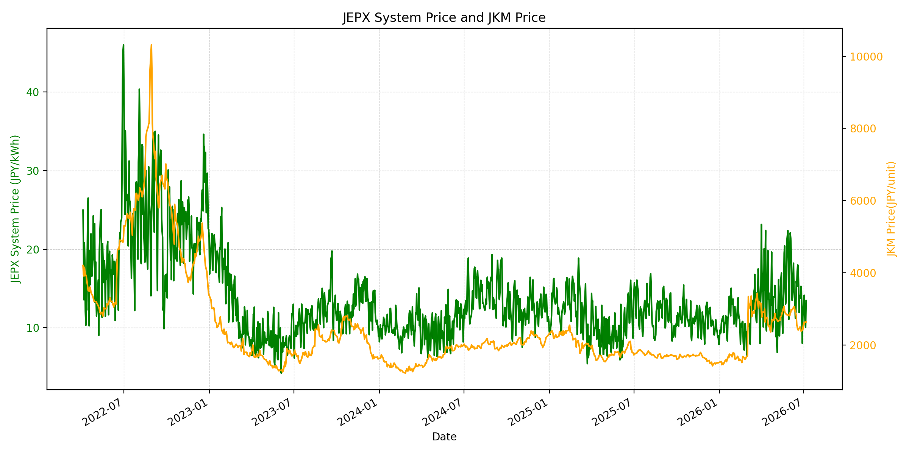
WTIの推移グラフ
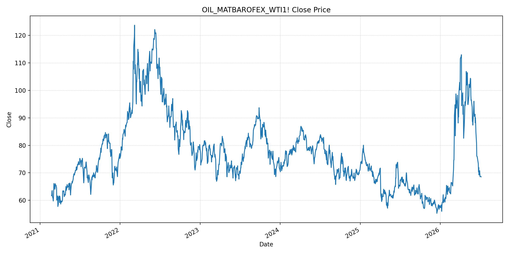
JEPXエリアプライスグラフ（直近一年分）
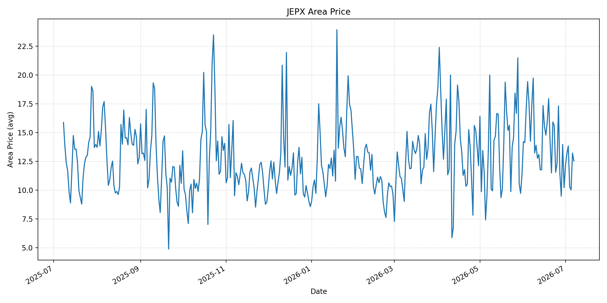
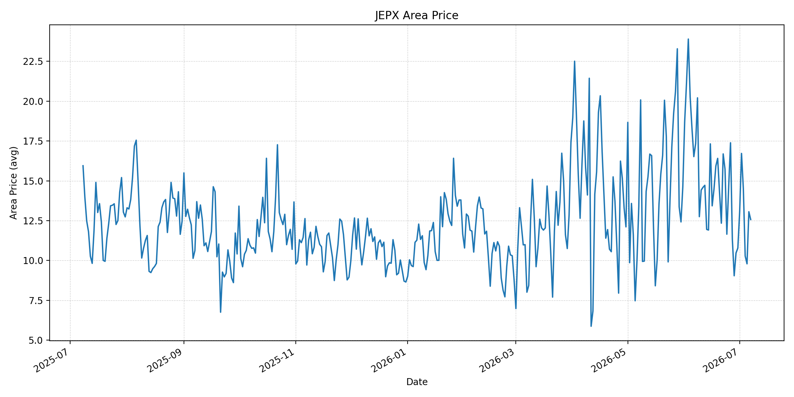
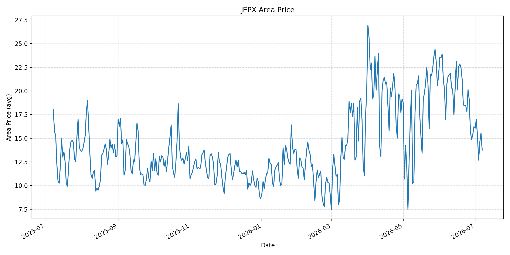
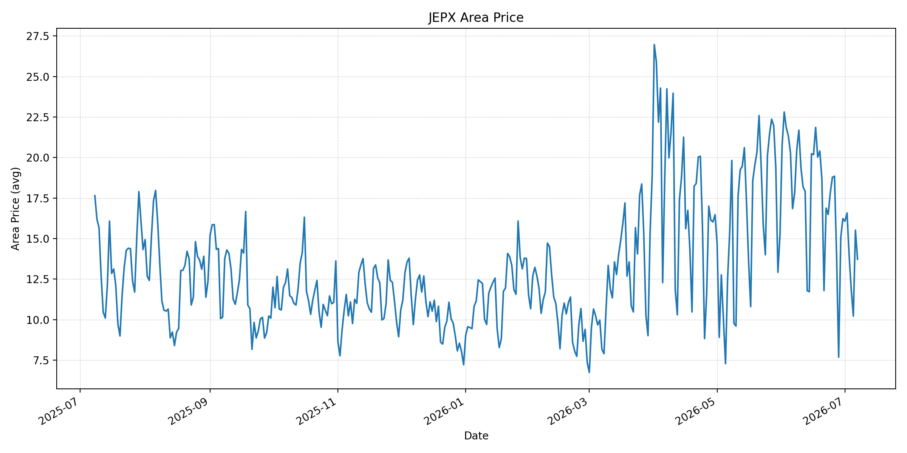
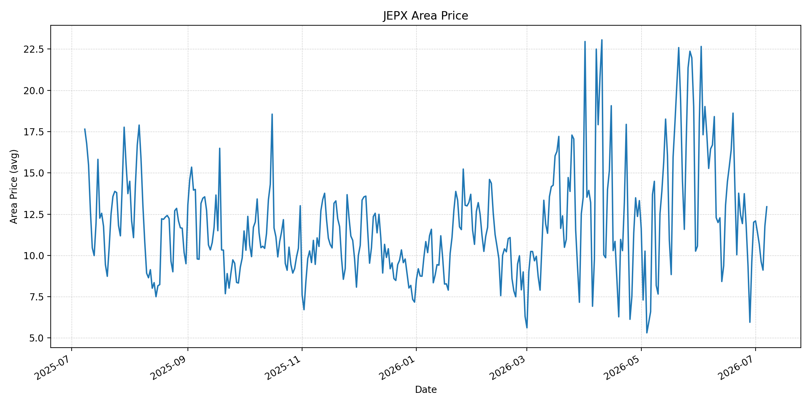
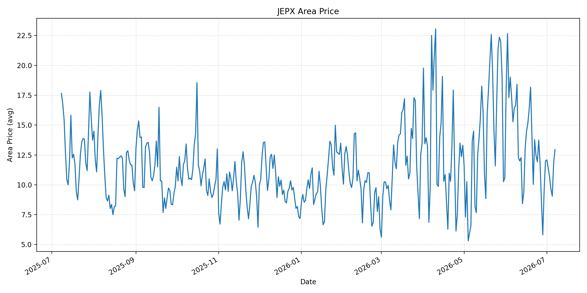
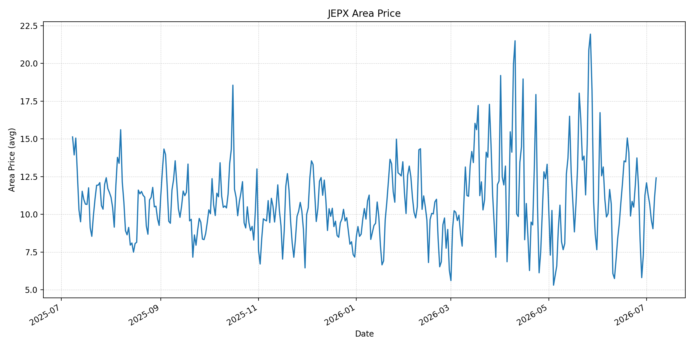
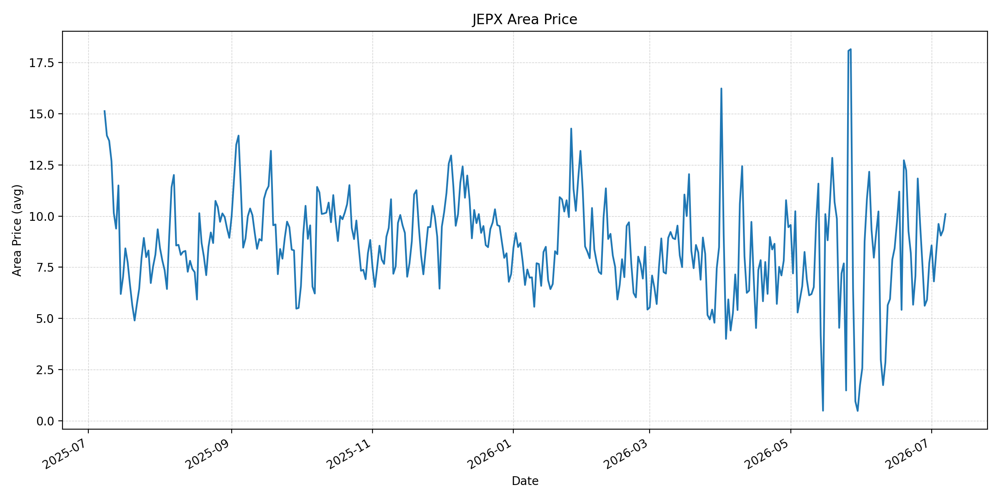
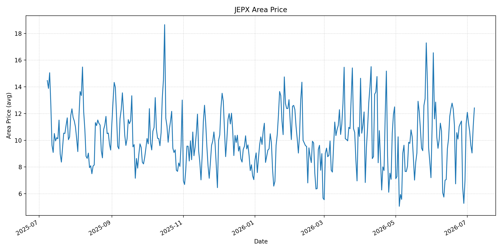
短期トレンド
JKMとJEPXシステムプライスの推移グラフ
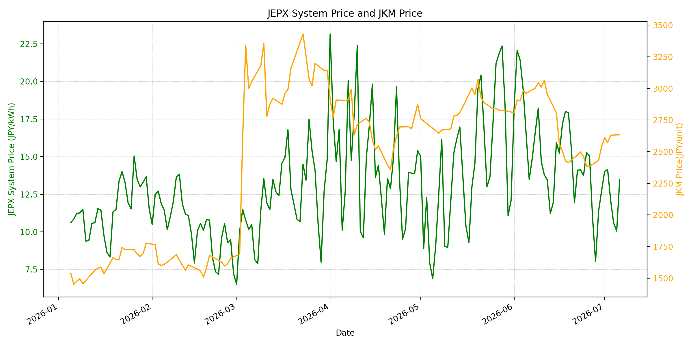
WTIの推移グラフ
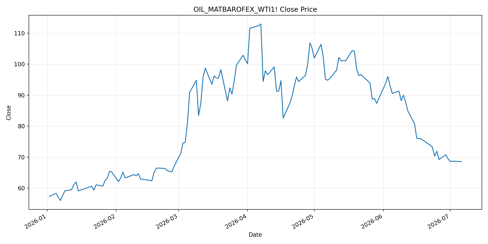
JEPXシステムプライス
JEPXは受渡日ベースの最新非空値で評価しています。最新値は 2026-07-07 分です。先週終値は 2026-06-30 時点の直近値、先月終値も 2026-06-30 時点の直近値で評価しています。
| エリア | 当日価格 | 前日価格 | 前日比（％） | 先週終値 | 先週比（％） | 先月終値 | 先月比（％） | 過去最高値 | 最高値比（％） |
|---|---|---|---|---|---|---|---|---|---|
| システム | 12.65 | 13.48 | -6.16 | 12.73 | -0.63 | 12.73 | -0.63 | 64.06 | -80.25 |
| 北海道 | 12.53 | 13.21 | -5.15 | 10.21 | 22.72 | 10.21 | 22.72 | 73.92 | -83.05 |
| 東北 | 12.57 | 13.06 | -3.75 | 10.78 | 16.60 | 10.78 | 16.60 | 84.92 | -85.20 |
| 東京 | 13.75 | 15.56 | -11.63 | 16.23 | -15.28 | 16.23 | -15.28 | 86.13 | -84.04 |
| 中部 | 13.72 | 15.52 | -11.60 | 16.23 | -15.47 | 16.23 | -15.47 | 52.06 | -73.65 |
| 北陸 | 12.95 | 11.78 | 9.93 | 12.01 | 7.83 | 12.01 | 7.83 | 46.48 | -72.14 |
| 関西 | 12.95 | 11.78 | 9.93 | 12.00 | 7.92 | 12.00 | 7.92 | 46.48 | -72.14 |
| 中国 | 12.42 | 11.11 | 11.79 | 11.26 | 10.30 | 11.26 | 10.30 | 46.48 | -73.28 |
| 四国 | 10.10 | 9.32 | 8.37 | 7.72 | 30.83 | 7.72 | 30.83 | 46.48 | -78.27 |
| 九州 | 12.42 | 11.02 | 12.70 | 11.24 | 10.50 | 11.24 | 10.50 | 40.54 | -69.37 |
LNG先物価格
最新値は 2026-07-06 の LNG(close) です。前日価格は直近非空値の 2026-07-03、先週終値は 2026-06-29 時点の直近値、先月終値は 2026-06-30 時点の直近値で評価しています。
| 当日価格 | 前日価格 | 前日比（％） | 先週終値 | 先週比（％） | 先月終値 | 先月比（％） | 過去最高値 | 最高値比（％） |
|---|---|---|---|---|---|---|---|---|
| 2634.00 | 2630.00 | 0.15 | 2430.00 | 8.40 | 2541.00 | 3.66 | 10319.00 | -74.47 |
石油先物価格
最新値は 2026-07-06 の OIL(close) です。前日価格は直近非空値の 2026-07-02、先週終値は 2026-06-29 時点の直近値、先月終値は 2026-06-30 時点の直近値で評価しています。
| 当日価格 | 前日価格 | 前日比（％） | 先週終値 | 先週比（％） | 先月終値 | 先月比（％） | 過去最高値 | 最高値比（％） |
|---|---|---|---|---|---|---|---|---|
| 68.55 | 68.69 | -0.20 | 70.75 | -3.11 | 69.50 | -1.37 | 123.70 | -44.58 |
ニュース
イラン情勢に関するニュース
- 2026年7月7日、WSJは、イラン革命防衛隊（IRGC）がホルムズ海峡付近で商船2隻にミサイルを発射したと報じました。米イラン戦争終結に向けた60日間の交渉期間中の攻撃であり、イラン国内の強硬派が協議を難しくしている構図が続いています。 参照: WSJ, 2026-07-07
- 同日、WSJは、ハメネイ前最高指導者の葬儀後に米イラン協議が再開されるとの見方を背景に、原油市場ではポジション調整が進んだと報じました。協議が進めば供給正常化期待が強まる一方、攻撃継続は反対方向の価格リスクになります。 参照: WSJ Oil Futures, 2026-07-07
ホルムズ海峡経由の石油・LNGに関するニュース
- WSJは、攻撃対象の一つがカタールのNakilatが管理するLNG船 Al Rekayyat とみられ、機関室付近に火災が発生したが乗員は安全と報じました。LNG船への直接リスクが確認されたため、ホルムズ経由のLNG調達では船舶保険と配船判断の不確実性が残ります。 参照: WSJ, 2026-07-07
- 同記事では、ホルムズ海峡の通航は直近で1日30〜60件程度に安定しているとされています。通航は止まっていないものの、IRGCが米軍の安全確認ルートを使わないよう警告しており、航路選択を巡るリスクは残存しています。 参照: WSJ, 2026-07-07
ホルムズ海峡経由でない石油・LNGに関するニュース
- 2026年7月6日、MarketWatchは、OPEC+が5カ月連続で増産し、8月に18.8万バレル/日を追加する方針を受けて原油価格が下落したと報じました。Brent、WTIとも戦前水準近辺で推移し、供給面は短期的に緩んでいます。 参照: MarketWatch, 2026-07-06
- Barron'sは、OPEC+増産、ホルムズ輸送回復、サウジやUAEの輸出回復により、BrentとDubai市場がコンタンゴ化し、短期供給が潤沢であると報じました。非ホルムズ供給の増勢は、ホルムズリスクの価格転嫁を抑える材料です。 参照: Barron's, 2026-07-06
日本国内のイラン戦争に関係するニュース
- 過去24時間で、JEPX制度、国内電力需給ルール、または日本政府の対イラン戦争関連対策を直接変更する主要な新規公表は確認できませんでした。
- 関連する国内材料として、経済産業省は2026年5月20日、2026年度夏季は全エリアで安定供給に最低限必要な予備率3％を確保できるため節電要請を実施しないと発表しています。一方で、国際情勢の変化、異常気象、火力発電所の集中はリスクとして明記されています。 参照: 経済産業省, 2026-05-20
インサイト
ニュース事項による日本の電力市場への影響（短期：数日〜1週間）
- JEPXシステムプライスは 12.65 円/kWhで前日比 -6.16%、先週比 -0.63% とほぼ横ばいです。東京は 13.75 円/kWhで前日比 -11.63%、中部も -11.60% と低下し、前日の反発は一部解消しました。
- OILは 68.55 で前回非空値比 -0.20%、先週比 -3.11% と低位です。OPEC+増産と供給回復は燃料費の上値を抑えますが、IRGCによる商船攻撃とLNG船被弾は、数日〜1週間の船舶保険・配船リスクを押し上げます。
- LNGは 2634.00 で前回非空値比 0.15%、先週比 8.40% です。LNG船への攻撃報道を踏まえると、原油安だけではLNG調達リスクを相殺しにくく、北陸・関西・九州など前日比上昇エリアでは短期の下支え要因になります。
ニュース事項による日本の電力市場への影響（長期：1ヶ月〜半年）
- OPEC+増産、サウジ・UAE輸出回復、ホルムズ通航の一定安定が続けば、OILは過去最高値比 -44.58%、LNGは -74.47% と低位にとどまり、日本の火力燃料費は中期的に抑えられます。
- 一方、IRGCが商船を攻撃した事実は、米イラン協議が進んでも現場リスクが残ることを示します。1ヶ月〜半年では、航路承認、通航料、保険料、LNG船の安全確保が再び問題化すれば、燃料価格よりも物流費がJEPXの上振れ要因になります。
- 国内では節電要請なしの前提ですが、北海道は先週比 22.72%、四国は 30.83%、九州は 10.50% と地域差があります。燃料相場の落ち着きだけでなく、夏季需要と地域別供給制約を合わせて見る必要があります。